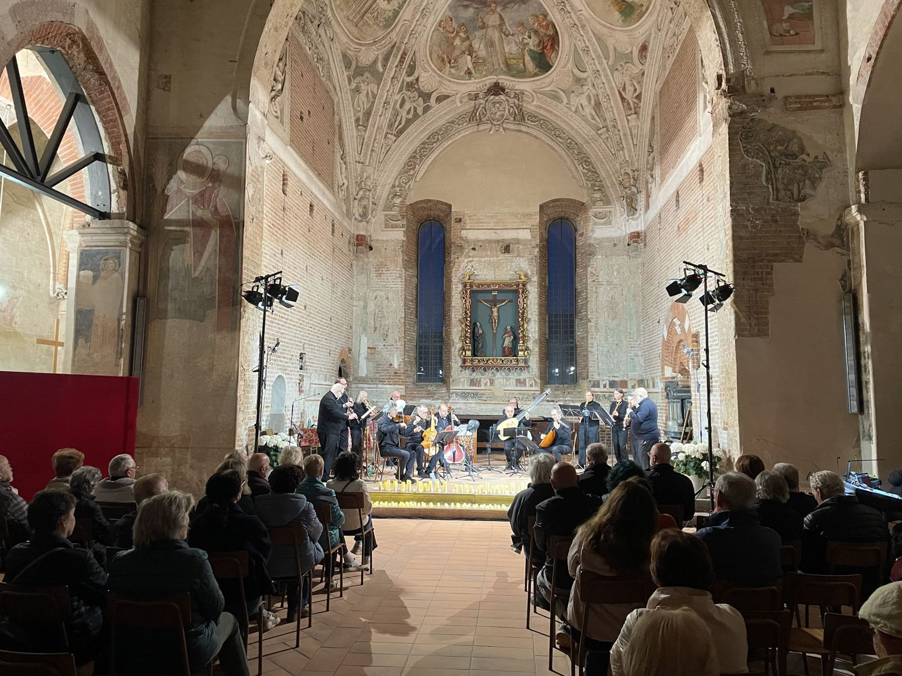

il SETTICLAVIO aps › Progetti › Music for Life
Concerti e solidarietà
Music for Life
Concerti di alto valore artistico con musicisti professionisti e amatori, pensati come autentici eventi culturali per sostenere i progetti dell'associazione.

- Che cosa
- Concerti di musica classica, da camera e d'autore
- Con
- Musicisti professionisti, giovani talenti e amatori
- Perché
- Raccogliere sostegno per i progetti sociali dell'associazione
- Dal
- 2004: concerti, rassegne e una collana di CD
Il progetto
Music for Life nasce con l'intento di realizzare, insieme a musicisti professionisti e amatori, concerti di alto valore artistico. Ha un duplice obiettivo: offrire al pubblico un'esperienza musicale di qualità e far conoscere l'associazione e i suoi progetti. Ogni concerto è un'occasione di crescita per la comunità e un'opportunità per raccogliere sostegno a favore dei progetti.
I programmi uniscono repertorio classico e contemporaneo in recital e formazioni cameristiche, per avvicinare alla musica il pubblico più ampio possibile. Dal 2026 la rassegna accoglie anche i programmi preparati dai corsisti di Insieme in Musica.
Una lunga storia
Le prime edizioni risalgono al 2004. Nel 2005 i concerti di Music for Life hanno accompagnato «Arte per la Vita», la rassegna internazionale all'ex Arsenale di Verona il cui ricavato è andato a Emergency e City Angels. Dal progetto è nata anche una collana di CD, dal primo disco del 2004 a Cantiamo insieme – Music for Children (2007).
Le foto


I video
Domande frequenti
Come si sostengono i progetti con Music for Life?
I concerti sono occasioni di raccolta fondi: le offerte raccolte sostengono i progetti sociali dell'associazione, come Tra le Onde e A Tempo.
Un'azienda può organizzare un concerto Music for Life?
Sì: l'associazione realizza concerti ed eventi su misura per aziende ed enti, anche natalizi. Scriveteci per una proposta.
Vuoi organizzare un concerto o sostenere la rassegna?
Gli altri progetti: Tra le Onde · A Tempo · Insieme in Musica